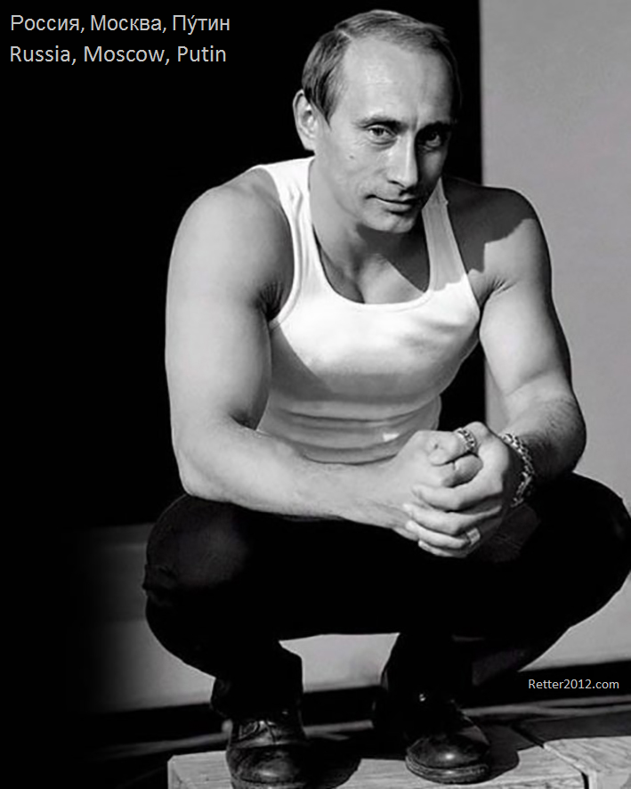

返回主页
斯拉夫强人：普京（Putin）

俄语有自己的字母体系；俄国有自己的宗教。根据和什哲郎的《风土》，斯拉夫人同当年的匈奴突厥蒙古一样，乃是崛起于北亚的野蛮民主。（参考厉以宁的《罗马拜占庭经济史（下编）》）
更多资讯，请访问： retter2012.com 。
高晓松的爷爷高景德是中国著名电机工程专家、电机工程教育家、中国科学院院士、清华大学原校长。外公张维是深圳大学的创办者、中国工程院、科学院两院院士、熟操四国语言的科学家；外婆陆士嘉是中国著名的流体力学家、教育家，世界流体力学权威普朗特教授唯一的女学生和中国籍留学生，参与筹建北京航空学院（北京航空航天大学）的委员，主持建设中国第一个空气动力专业；舅舅张克潜是著名的物理电子学与光电子学科学家，清华大学教授兼博导；母亲是著名的建筑学家张克群。父亲高立人，清华大学教授。
晓说第二季-第三十五期-莽莽俄罗斯：充满偏见。高晓松对俄罗斯和苏联没有好感，好哗众取宠。研究历史，英国人写的德国历史也不乍地，几个强国都差不多。巴尔扎克（Balzac）说，悲剧是成熟的标志。
请参考 Russia: Culture Smart! Anna King
强人：李光耀（Lee Kuan Yew）
以色列（Israel）简介
version:1.0; jobnet@188.com © retter2012.com